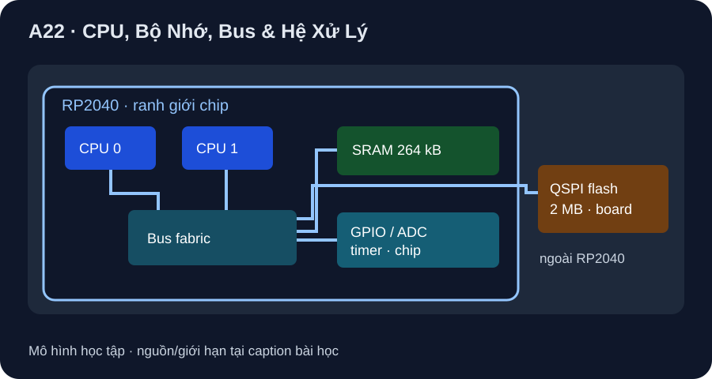

CPU, Bộ Nhớ, Bus & Hệ Xử Lý
Đọc một hệ thực từ silicon đến board: 264 kB SRAM ở RP2040 khác 2 MB flash trên Pico.
- Vẽ luồng CPU lấy lệnh/dữ liệu qua bus tới SRAM, flash và ngoại vi có thanh ghi ánh xạ địa chỉ.
- Phân biệt 264 kB SRAM thuộc RP2040 với 2 MB flash thuộc Pico board và tính một ngân sách nhớ giả định.
- Giải thích MCU/MPU/SoC là nhãn kiến trúc có thể chồng lấn, không thay dữ liệu board/part.

Đọc hình bằng chữ
Hai lõi CPU Cortex-M0+ của RP2040 nối tới cấu trúc bus bên trong. Bus cho phép CPU và các bus master truy cập SRAM 264 kB on-chip, thanh ghi ngoại vi và vùng XIP/cache phục vụ flash QSPI. Flash 2 MB được gắn trên board Pico, bên ngoài gói RP2040. Sơ đồ không thể hiện thứ tự ưu tiên hay chu kỳ tranh chấp bus.
1. Bốn lớp cần đọc riêng
CPU thực thi lệnh; bộ nhớ giữ lệnh/dữ liệu; bus chuyển giao các lần đọc/ghi; ngoại vi có thanh ghi điều khiển và kết nối tín hiệu. RP2040 datasheet §2.6 ghi SRAM on-chip tổng 264 kB chia sáu bank vật lý. RP2040 có hai lõi Arm Cortex-M0+ và QSPI/XIP với cache; Pico board datasheet §1 ghi 2 MB flash nằm trên board. Không cộng 2 MB flash vào dung lượng SRAM của chip hoặc nói mọi board RP2040 đều gắn đúng flash này.
Trong một ví dụ firmware chạy từ flash qua XIP/cache, CPU lấy lệnh theo địa chỉ; biến/buffer có thể ở SRAM; đọc/ghi thanh ghi GPIO là truy cập ngoại vi được ánh xạ vào không gian địa chỉ. Cấu trúc bus giúp nhiều master tiếp cận tài nguyên, nhưng không suy rằng hai CPU luôn đọc cùng bank mà không tranh chấp hoặc rằng flash nhanh ngang SRAM. Sơ đồ A22-1 chỉ đường logic cấp hệ, không vẽ đường mạch QSPI.
2. MCU, MPU và SoC
RP2040 là ví dụ MCU: tích hợp CPU, SRAM và nhiều ngoại vi trong một chip; flash chương trình của Pico được nối ngoài chip. Từ MPU thường nhấn mạnh khối xử lý cần thêm bộ nhớ/ngoại vi ở cấp hệ, còn SoC nhấn mạnh nhiều chức năng tích hợp trên một chip. Các nhãn này không phải ba hộp loại trừ nhau và không cho biết GPIO, RAM, radio hay hệ điều hành nếu chưa đọc đúng mã chip/board. Một Raspberry Pi Pico chạy firmware MCU, không phải máy Raspberry Pi Linux chỉ vì chung thương hiệu.
3. Ví dụ ngân sách nhớ có điều kiện
Giả định image firmware có 128 KiB và buffer dữ liệu cần 32 KiB. Trên reference Pico, 128 KiB < 2 MiB flash board và 32 KiB < 264 KiB SRAM chip; buffer bằng 32/264≈12,1% tổng SRAM vật lý. Đây mới là cổng dung lượng thô: còn bootloader/firmware, stack, heap, cache, vùng dành riêng, layout liên kết và độ bền flash. Với MicroPython, không được tự nhận còn đủ 232 KiB heap cho ứng dụng chỉ bằng phép trừ này.
4. Hoạt động trên giấy
Vẽ ba khung: RP2040 chip, Pico board, thiết bị ngoài. Đặt CPU/SRAM/GPIO vào chip và flash 2 MB vào board; khoanh một đường lấy lệnh XIP và một đường ghi GPIO. Lập bảng “thuộc chip/board/chưa biết”, rồi kiểm từng dòng theo hai datasheet hãng. Với image/buffer giả định, tính tỷ lệ 32/264 và ghi điều kiện chưa biết trước khi quyết định chạy được.
| Tài nguyên | Cấp | Dữ kiện reference |
|---|---|---|
| Hai Cortex-M0+, SRAM 264 kB, bus/ngoại vi | RP2040 silicon | Datasheet RP2040 |
| Flash QSPI 2 MB | Pico board, ngoài chip | Pico datasheet |
| Heap còn trống sau firmware | Runtime cụ thể | Chưa đo/không suy từ tổng SRAM |
Fig. 1 của datasheet dùng board Rev3 làm hình tham khảo; không có board vật lý ở dự án để xác định PCB revision. Khi mua/lắp phải ghi board thực, firmware/toolchain và test log, nhất là khi chuyển sang Pico W/Pico 2 hoặc board RP2040 khác.
Một chương trình giả định có image 128 KiB và buffer 32 KiB. Chúng thường được đặt ở flash board hay SRAM chip trong ví dụ Pico? Tính phần trăm 32 KiB so với tổng 264 KiB SRAM. Có được kết luận còn đúng 232 KiB heap cho MicroPython không?
- 1 điểm: image 128 KiB ở flash 2 MB trên Pico board trong mô hình chạy XIP.
- 1 điểm: buffer 32 KiB dùng SRAM thuộc RP2040 (nếu phần mềm bố trí như giả định).
- 1 điểm:
32/264≈12,1%tổng SRAM vật lý; 128 KiB nhỏ hơn 2 MiB flash. - 1 điểm: không suy heap còn 232 KiB vì runtime/stack/heap/firmware và phân bổ khác còn chiếm SRAM.